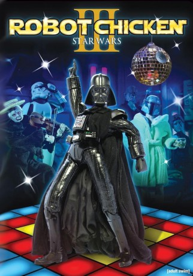

#10214 Robot Chicken: Star Wars - Episodes III
 
 IMDB-Wertung: 8.1 / 10
IMDB-Wertung: 8.1 / 10  Metascore: 0
Metascore: 0 
Es war einmal vor nicht allzu langer Zeit in einer nicht weit genug entfernten Galaxie...\r In einer Million Jahren, wenn Sokrates, Shakespeare und die Bibel lange vergessen sind, werden nur zwei große Werke in Erinnerung bleiben: Die epische Kino-Saga Star Wars und Adult Swims preisgekrönte State-of-the-art Stop-Motion-Animations-Satire Robot Chicken. Ein etwas ungewöhnliches Wiedersehen mit den Helden der Star Wars - Filme - ungeschnitten und unzensiert - so wie es eben wirklich war.
Jahr: 2010
Dauer: 44 Minuten
FSK: 12
Land: USA Studio: Adult SwimTonspuren: DD2.0 - ,
Untertitel:
Auflösung: 1080p (1920x1080) Größe: 1576 MB
Genre: Sci-Fi, Komödie, Animation/Trick
Regisseur: Chris McKay
Drehbuch: Seth Green, Matthew Senreich, Douglas Goldstein, Tom Root, Matthew Ireland Beans
Soundtrack: Shawn Patterson
Darsteller:
Datei: X:\HD-Trick-Collections\Robot Chicken Star Wars - Episodes III (2010, FSK12, 1920x1080).mkv seit 23.12.2018
Festplatte: Kinder-Filme+Trick
 Alle Filme aus Gruppe 'HD-Trick-Collections'
Alle Filme aus Gruppe 'HD-Trick-Collections'